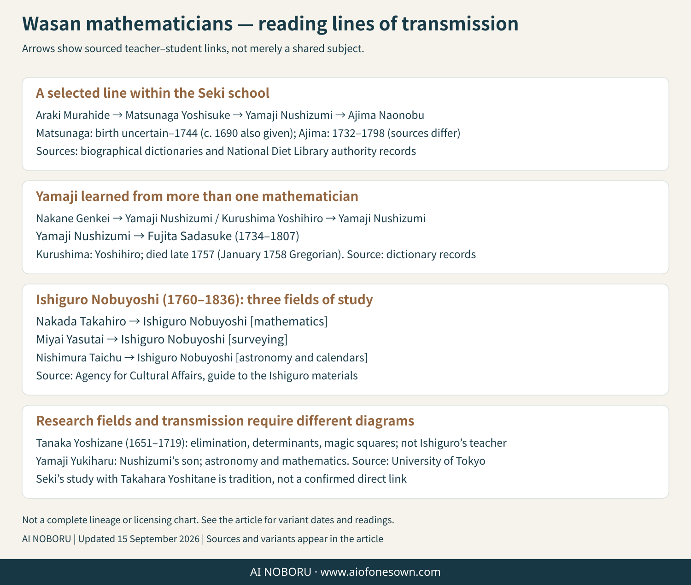

Yoshida Mitsuyoshi 1598–1672
Author of Jinkoki, the best-known early Edo arithmetic book. Its changing editions joined commercial arithmetic, measurement, and recreational problems.
About Wasan / People
The cards below identify selected figures and documented connections. An arrow in a teaching diagram can represent a teacher–student relationship, the influence of earlier ideas, the transmission of edited texts, or a shared research theme. These are different kinds of connection and must be distinguished.

Author of Jinkoki, the best-known early Edo arithmetic book. Its changing editions joined commercial arithmetic, measurement, and recreational problems.
A central figure in Edo mathematics whose work ranged across equations, elimination, finite sums, interpolation, and circle calculation. Exact wording about priority depends on the source and comparison being made.
The younger Takebe brother, a student of Seki and a major investigator of circle measurement, numerical patterns, and exposition. He helped compile Taisei sankei.
The elder Takebe brother, also a student of Seki and a participant in Taisei sankei. His given name is also read as Kataaki in modern references.
The correct name is Matsunaga Yoshisuke; an earlier diagram contained a misprint involving similar-looking characters. Sources disagree over whether to give 1690 or 1694 as his birth year, so both are retained here.
An inventive mathematician associated with advanced algebraic and geometrical work. The accepted reading of his given name is Yoshihiro; the reading formerly printed on the site was incorrect. He died on the twenty-ninth day of the eleventh month of Hōreki 7 in the Japanese calendar, corresponding to January 8, 1758 in the Gregorian calendar; references therefore variously give 1757 or 1758.
Studied with figures including Nakane Genkei, Kurushima Yoshihiro, and Matsunaga Yoshisuke, and taught Ajima Naonobu and others. He was important in the institutional development of the Seki school.
An outstanding geometer of the Seki tradition. Later authority records and Hirayama’s research support 1732, while some dictionaries give 1739. Either way, his life belongs to the eighteenth century, not the nineteenth.
A Kyoto mathematician known for multivariable elimination, small determinants, resultants, and magic squares. “Yoshizane” is the principal dictionary reading; alternate names and readings occur in historical records.
A mathematician, surveyor, and cartographer. He studied Seki-school mathematics with Nakada Takahiro and learned surveying and calendrical subjects in Kanazawa. Direct lines from Tanaka or Takebe to Ishiguro are chronologically impossible and are not shown here.
Known for major advances in circle theory and for systematic work with maxima and minima. Romanization varies because historical name readings are not always transmitted uniformly.
A teacher, editor, and preserver of mathematical records. Irisawa Shintaro Hiroatsu, who dedicated the 1822 six-sphere-chain sangaku, studied under him.
A direct teacher–student relation is a historical claim and needs evidence. A diagram may instead trace a book, a school, or the later development of a topic. The earlier site diagrams blurred these categories in several places. The corrected presentation therefore labels broad “research pathways” separately from direct instruction.
For example, Ajima first learned from Irie Ochu and later entered the Seki lineage under Yamaji Nushizumi; drawing a direct Matsunaga-to-Ajima arrow omits the documented teacher. Likewise, Ishiguro’s mathematics teacher was Nakada Takahiro, not Tanaka Yoshizane or Takebe Katahiro.
Names and dates: premodern names can have variant characters, readings, era dates, and Gregorian conversions. A range or pair of alternatives here signals a real source difference, not uncertainty concealed by the site.